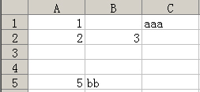

对于中文Excel，它的XML字符集为gb2312
首先，我们来看一个空的EXCEL表生成的XML文档，它有3个Worksheet，生成的XML文档如下所示：
<?xml version="1.0"?> <?mso-application progid="Excel.Sheet"?> <Workbook xmlns="urn:schemas-microsoft-com:office:spreadsheet" xmlns:o="urn:schemas-microsoft-com:office:office" xmlns:x="urn:schemas-microsoft-com:office:excel" xmlns:ss="urn:schemas-microsoft-com:office:spreadsheet" xmlns:html="http://www.w3.org/TR/REC-html40"> <DocumentProperties xmlns="urn:schemas-microsoft-com:office:office"> <Author>liuld</Author> <LastAuthor>liuld</LastAuthor> <Created>2007-02-21T03:06:01Z</Created> <Company>autosh</Company> <Version>11.5606</Version> </DocumentProperties> <ExcelWorkbook xmlns="urn:schemas-microsoft-com:office:excel"> <WindowHeight>8550</WindowHeight> <WindowWidth>10620</WindowWidth> <WindowTopX>480</WindowTopX> <WindowTopY>60</WindowTopY> <ProtectStructure>False</ProtectStructure> <ProtectWindows>False</ProtectWindows> </ExcelWorkbook> <Styles> <Style ss:ID="Default" ss:Name="Normal"> <Alignment ss:Vertical="Center"/> <Borders/> <Font ss:FontName="宋体" x:CharSet="134" ss:Size="12"/> <Interior/> <NumberFormat/> <Protection/> </Style> </Styles> <Worksheet ss:Name="Sheet1"> <Table ss:ExpandedColumnCount="0" ss:ExpandedRowCount="0" x:FullColumns="1" x:FullRows="1" ss:DefaultColumnWidth="54" ss:DefaultRowHeight="14.25"/> <WorksheetOptions xmlns="urn:schemas-microsoft-com:office:excel"> <Unsynced/> <Selected/> <ProtectObjects>False</ProtectObjects> <ProtectScenarios>False</ProtectScenarios> </WorksheetOptions> </Worksheet> <Worksheet ss:Name="Sheet2"> <Table ss:ExpandedColumnCount="0" ss:ExpandedRowCount="0" x:FullColumns="1" x:FullRows="1" ss:DefaultColumnWidth="54" ss:DefaultRowHeight="14.25"/> <WorksheetOptions xmlns="urn:schemas-microsoft-com:office:excel"> <Unsynced/> <ProtectObjects>False</ProtectObjects> <ProtectScenarios>False</ProtectScenarios> </WorksheetOptions> </Worksheet> <Worksheet ss:Name="Sheet3"> <Table ss:ExpandedColumnCount="0" ss:ExpandedRowCount="0" x:FullColumns="1" x:FullRows="1" ss:DefaultColumnWidth="54" ss:DefaultRowHeight="14.25"/> <WorksheetOptions xmlns="urn:schemas-microsoft-com:office:excel"> <Unsynced/> <ProtectObjects>False</ProtectObjects> <ProtectScenarios>False</ProtectScenarios> </WorksheetOptions> </Worksheet> </Workbook>
首先，EXCEL先用<mso-application>标签说明本XML是用EXCEL生成的。
使用<Workbook>标签作为整个XML的根结点。该标签的属性可作为固定值对待。
<DocumentProperties>标签用于指示EXCEL表的一些信息，包括：创建人、最后修改人、创建时间、文件版本
<ExcelWorkbook>标签指示工作薄的一些设置，它有如下子标签（对于只在很少情况下使用的子标签在此不作介绍，下同）
| 标签 | 说明 |
|---|---|
| ProtectStructure | 使用EXCEL菜单中的保护 - 保护工作薄中的结构选项 |
| ProtectWindows | 使用EXCEL菜单中的保护 - 保护工作薄中的窗口选项 |
要注意，XML不支持使用密码保护的工作薄。
在Excel中，很容易存在这么一种情况，那就是很大的一个表格，但各个单元格的格式都差不多，例如作一份电话通讯录，内容可能有个万八千行，但格式也不过就表头和表体两种，因此，将格式的描述从单元格中抽取出来，单元格中只存放一个ID，类似于一个指向实际格式的指针，以节约存储空间。
<Styles>标签用于储存EXCEL表中单元格中用到的样式，样式内容包括：
下表是它的子标签说明：
| 标签 | 说明 |
|---|---|
| Alignment | 它有两个子属性：
|
| Borders | 是<Border>标签的集合，最多有4个<Border>标签，分别表示上下下左右4条边，每个Border标签包括如下属性：
|
| Font | 对中文字体，有如下属性：
<Font ss:FontName="黑体" x:CharSet="134" ss:Size="14"/>而对英文字体，一般不带 x:CharSet 属性，增加如下属性：
<Font x:Family="Swiss" ss:Size="14"/> |
| Interior | 表示单元格的一些颜色设置等
底色设置属性
|
| NumberFormat | |
| Protection |
<Worksheet>标签就是存数据的地方了，Excel表中有几个Worksheet，在XML中就会有几个<Worksheet>标签。Excel以存储稀疏矩阵的方式来存储数据，其存储方式描述如下：
<Comment ss:Author="liuld"> <ss:Data xmlns="http://www.w3.org/TR/REC-html40"> <B> <Font html:Size="9" html:Color="#000000">ABCD</Font> </B> </ss:Data> </Comment>
下面的示例描述了XML代码与Excel表格的对应关系
<Row ss:AutoFitHeight="0">
<Cell><Data ss:Type="Number">1</Data></Cell>
<Cell ss:Index="3"><Data ss:Type="String">aaa</Data></Cell>
</Row>
<Row ss:AutoFitHeight="0">
<Cell><Data ss:Type="Number">2</Data></Cell>
<Cell><Data ss:Type="Number">3</Data></Cell>
</Row>
<Row ss:AutoFitHeight="0" ss:Span="1"/>
<Row ss:Index="5" ss:AutoFitHeight="0">
<Cell><Data ss:Type="Number">5</Data></Cell>
<Cell><Data ss:Type="String">bb</Data></Cell>
</Row>

有效性规则是指单元格内的数据限制，例如在单元格中做一个下拉列表框，用户只能填入下拉列表框内的内容，其XML定义如下所示：
<DataValidation xmlns="urn:schemas-microsoft-com:office:excel"> <Range>R1C1</Range> <Type>List</Type> <CellRangeList/> <Value>"1,2,3"</Value> </DataValidation>
上面表示在单元格A1中只能输入值1、2、3，如果有多个单元格具有相同的有效性规则，Excel会存放在同一个<DataValidation>标签中，在<Range>子标签中存放多个单元格位置信息，之间用“,”隔开。